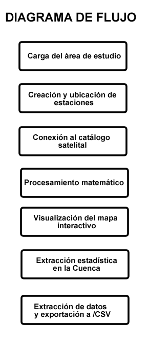
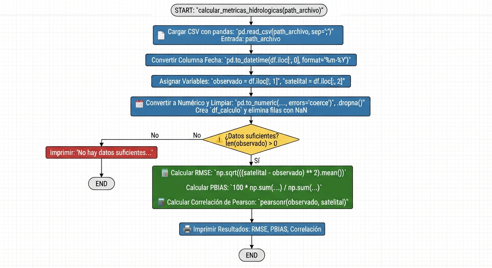

10. Validación de estimaciones de precipitación satelital mediante Google Earth Engine (GEE): Un análisis comparativo con datos de red de estaciones en la Cuenca del Rio Bermejo#
Autor: Guan Manuel Bazán.
Resumen: La cuantificación precisa de la precipitación es un pilar fundamental para la gestión de recursos hídricos, aunque en muchas regiones de Latinoamérica la densidad de estaciones meteorológicas es insuficiente. Este trabajo evalúa la precisión de diversos catálogos de datos climáticos disponibles en Google Earth Engine (GEE), específicamente CHIRPS y ERA5-Land, para la estimación de lluvias mensuales y anuales. La metodología consistió en la extracción automatizada de series temporales mediante scripts en GEE, las cuales fueron contrastadas con registros observados en estaciones de superficie. Para determinar la fiabilidad de los productos satelitales, se calcularon métricas de error robustas, incluyendo el Error Cuadrático Medio (RMSE), el Sesgo (Bias) y el Coeficiente de Correlación de Pearson. Los resultados preliminares indican que, si bien existen discrepancias en eventos extremos, los productos satelitales representan fielmente la estacionalidad regional. Este estudio demuestra que la integración de sensores remotos y procesamiento en la nube constituye una alternativa técnica viable y de bajo costo para fortalecer el monitoreo hidrológico en cuencas con escasa instrumentación.
Palabras Claves: GEE, CHIRPS, ERAS5-Land, precipitación, precipitación satelital.
10.1. Introducción#
La cuenca del Río Bermejo, compartida por Argentina y Bolivia, es un área clave en el sistema hídrico para el desarrollo de la región de la Cuenca del Plata. Abarca alrededor de \(123.162\text{ Km}^2\), de los cuales unos \(11.900\text{ km}^2\), equivalentes a un \(10\%\), pertenecen a Bolivia, y el \(90\%\) restante corresponde al área argentina.
En Bolivia, la cuenca se desarrolla totalmente dentro del Departamento de Tarija, y en el norte de Argentina, abarca territorios de las provincias de Chaco, Formosa, Jujuy y Salta. Su población estimada es de \(1.500.000\) habitantes.
Por sus características geomorfológicas la Cuenca se divide en Alta Cuenca (Alta Cuenca Boliviana y Alta Cuenca Argentina) y Baja Cuenca (Argentina). La Alta Cuenca está definida por cuatro tributarios principales del Río Bermejo: el Río Grande de Tarija, el Río Alto Bermejo, el Río Pescado y el Río San Francisco.
El régimen hidrológico de los ríos es netamente pluvial con una variedad estacional bien definida, caracterizado por un período de importantes caudales en la época lluviosa, con un valor cercano al \(75\%\) del escurrimiento entre enero y marzo (alcanzando hasta un \(85\%\) en todo el período estival) y otro de caudales mínimos en la época seca (abril a septiembre, reduciéndose hasta el \(11\%\)).
Si bien la cuenca cuenta con un sistema de información hidrometeorológico con muchas estaciones distribuidas en toda la Alta cuenca, la posibilidad de extrapolar valores a lugares donde no existen estaciones de medición a partir de estimaciones de precipitación con imágenes satelitales abre una gran oportunidad de trabajo para poder realizar análisis hidrológicos en cuencas donde no se cuenta con información de lluvias.
El objetivo de este trabajo es comparar los registros a nivel mensual y anual de las precipitaciones medidas in situ en el terreno con las estimaciones realizadas por satélites.
Las estaciones pluviométricas que utilizaremos en este estudio se encuentran en la Alta Cuenca del río Bermejo y son las que se detallan en la Tabla 1.
Show code cell source
import pandas as pd
from IPython.display import HTML, display
def mostrar_tabla(df, caption, formatos=None):
"""Tabla HTML estilizada, sin dependencias adicionales a pandas."""
styler = (df.style
.hide(axis="index")
.set_caption(caption)
.set_table_styles([
{"selector": "caption", "props": [("caption-side", "top"), ("text-align", "left"), ("font-weight", "bold"), ("font-size", "1.05rem"), ("padding", "12px 0")]},
{"selector": "th", "props": [("background-color", "#e8f1f8"), ("color", "#173b56"), ("padding", "10px"), ("text-align", "left"), ("border-bottom", "2px solid #8daec4")]},
{"selector": "td", "props": [("padding", "9px"), ("border-bottom", "1px solid #dce5eb"), ("vertical-align", "top")]},
{"selector": "table", "props": [("width", "100%"), ("border-collapse", "collapse")]},
])
.apply(lambda row: ["background-color: #f5f9fc" if row.name % 2 else "" for _ in row], axis=1))
if formatos:
styler = styler.format(formatos)
display(HTML(styler.to_html()))
estaciones_tabla = pd.DataFrame({
"Estacion": ["Balapuca", "Aguas Blancas", "San Telmo", "San José", "Cuatro Cedros", "Pozo Sarmiento", "Caimancito"],
"Latitud": [-22.5003, -22.7264, -22.5734, -22.8655, -22.8004, -23.1333, -23.7115],
"Longitud": [-64.4588, -64.3699, -64.2448, -64.7036, -64.5176, -64.2040, -64.5355],
})
mostrar_tabla(estaciones_tabla.rename(columns={"Estacion": "Nombre estación", "Latitud": "Latitud (°)", "Longitud": "Longitud (°)"}),
"Tabla 1. Estaciones pluviométricas utilizadas",
{"Latitud (°)": "{:.4f}", "Longitud (°)": "{:.4f}"})
| Nombre estación | Latitud (°) | Longitud (°) |
|---|---|---|
| Balapuca | -22.5003 | -64.4588 |
| Aguas Blancas | -22.7264 | -64.3699 |
| San Telmo | -22.5734 | -64.2448 |
| San José | -22.8655 | -64.7036 |
| Cuatro Cedros | -22.8004 | -64.5176 |
| Pozo Sarmiento | -23.1333 | -64.2040 |
| Caimancito | -23.7115 | -64.5355 |
Show code cell source
from pathlib import Path
from IPython.display import display
import pandas as pd
import geopandas as gpd
import folium
# ---------------------------------------------------------
# 1. Lectura del shapefile
# ---------------------------------------------------------
ruta_shp = Path("files") / "Cuenca_Bermejo_Total.shp"
if not ruta_shp.exists():
raise FileNotFoundError(
f"No se encontró el archivo: {ruta_shp}"
)
cuenca = gpd.read_file(ruta_shp)
if cuenca.empty:
raise ValueError("El shapefile no contiene geometrías.")
if cuenca.crs is None:
raise ValueError("El shapefile no tiene un CRS definido.")
# Transformar a WGS84 para Folium
cuenca = cuenca.to_crs(epsg=4326)
# ---------------------------------------------------------
# 2. Estaciones pluviométricas
# ---------------------------------------------------------
estaciones = pd.DataFrame({
"nombre": [
"Balapuca",
"Aguas Blancas",
"San Telmo",
"San José",
"Cuatro Cedros",
"Pozo Sarmiento",
"Caimancito"
],
"lat": [
-22.5003, -22.7264, -22.5734,
-22.8655, -22.8004, -23.1333,
-23.7115
],
"lon": [
-64.4588, -64.3699, -64.2448,
-64.7036, -64.5176, -64.2040,
-64.5355
]
})
# ---------------------------------------------------------
# 3. Calcular centro de la cuenca
# ---------------------------------------------------------
cuenca_proyectada = cuenca.to_crs(epsg=3857)
centro_proyectado = (
cuenca_proyectada.geometry.union_all().centroid
)
centro = (
gpd.GeoSeries(
[centro_proyectado],
crs="EPSG:3857"
)
.to_crs(epsg=4326)
.iloc[0]
)
# ---------------------------------------------------------
# 4. Crear mapa con Argenmap (IGN Argentina)
# ---------------------------------------------------------
mapa = folium.Map(
location=[centro.y, centro.x],
zoom_start=7,
tiles=None,
control_scale=True,
width="100%",
height=500
)
folium.TileLayer(
tiles=(
"https://wms.ign.gob.ar/geoserver/gwc/service/tms/1.0.0/"
"capabaseargenmap@EPSG%3A3857@png/{z}/{x}/{-y}.png"
),
attr="© Instituto Geográfico Nacional (IGN)",
name="Argenmap",
min_zoom=3,
max_zoom=18,
overlay=False,
control=True
).add_to(mapa)
# ---------------------------------------------------------
# 5. Agregar polígono de la cuenca
# ---------------------------------------------------------
folium.GeoJson(
cuenca.__geo_interface__,
name="Cuenca del río Bermejo",
style_function=lambda feature: {
"color": "blue",
"weight": 2,
"fillColor": "blue",
"fillOpacity": 0.15
}
).add_to(mapa)
# ---------------------------------------------------------
# 6. Agregar estaciones pluviométricas
# ---------------------------------------------------------
grupo_estaciones = folium.FeatureGroup(
name="Estaciones pluviométricas"
)
for estacion in estaciones.itertuples(index=False):
folium.CircleMarker(
location=[estacion.lat, estacion.lon],
radius=6,
color="red",
weight=2,
fill=True,
fill_color="red",
fill_opacity=0.9,
popup=folium.Popup(estacion.nombre, max_width=200),
tooltip=estacion.nombre
).add_to(grupo_estaciones)
grupo_estaciones.add_to(mapa)
# Ajustar la extensión del mapa a los límites de la cuenca
xmin, ymin, xmax, ymax = cuenca.total_bounds
mapa.fit_bounds([[ymin, xmin], [ymax, xmax]])
# Control de capas y visualización
folium.LayerControl(collapsed=False).add_to(mapa)
display(mapa)
Si bien en Google Earth Engine (GEE) existen varios catálogos para la estimación de lluvias por imágenes satelitales, en este caso tendremos en cuenta solamente dos catálogos: CHIRPS y ERA5-Land.
10.2. Metodología (Materiales y Métodos)#
Para cumplir con los objetivos planteados se utilizaron como información de validación los registros pluviométricos mensuales de las estaciones mencionadas en la Tabla 1 los cuales fueron obtenidos a través del portal web del Sistema Nacional de Información Hídrica.
Para homogeneizar el estudio se evaluaron los registros mensuales de enero de 2009 a diciembre de 2025 en todas las estaciones.
La herramienta fundamental para obtener los registros pluviométricos a través de catálogos de datos climáticos fue Google Earth Engine.
Google Earth Engine (GEE) es una plataforma de computación en la nube diseñada específicamente para el análisis de datos geoespaciales a escala planetaria. GEE es, en esencia, un gigantesco laboratorio de procesamiento que permite a científicos y analistas ejecutar algoritmos sobre petabytes de imágenes satelitales y datos vectoriales sin necesidad de descargarlos a una computadora local.
La plataforma está orientada a la observación de la Tierra y el monitoreo ambiental. Sus aplicaciones principales, entre otras, incluyen detección de cambios, gestión de recursos naturales y predicción.
El factor innovador de GEE es el procesamiento en paralelo y el uso de catálogos unificados lo cual produjo un cambio de paradigma en el manejo de Big Data por la utilización de infraestructura de computación distribuida, el fácil uso de catálogos y la posibilidad de generar API´s.
A pesar de su potencia, GEE tiene un claro talón de Aquiles que son los límites de recursos del lado del servidor, la curva de aprendizaje de programación y la dependencia de la conectividad al ser un servicio en la nube.
Para la obtención de la estimación de precipitaciones a través de imágenes satelitales se propone la utilización de dos catálogos: CHIRPS (Climate Hazards Group InfraRed Precipitation with Station data) y ERA5-Land disponibles en GEE.
CHIRPS es un conjunto de datos cuasi-global de precipitación de alta resolución con más de 40 años de antigüedad, proporcionando datos desde 1981 hasta la actualidad. Combina estimaciones de precipitación infrarroja térmica basadas en satélites con observaciones in situ de estaciones para producir una serie temporal de precipitación en cuadrícula de \(0,05^\circ\) (\(\sim 5.5\text{ Km}\)) sobre la tierra. Es fundamentalmente un producto pentadal y mensual a partir del cual se derivan otros intervalos de tiempo. Este catálogo está diseñado específicamente para el monitoreo de precipitaciones a largo plazo.
ERA5-Land es un reanálisis climático producido por el ECMWF que ofrece una visión detallada de las variables terrestres. A diferencia de CHIRPS, ERA5-Land es multivariado y utiliza leyes de la física para combinar modelos de pronóstico con datos de observación históricos, tiene una resolución espacial de aproximadamente \(9\text{ km}\) y una resolución temporal horaria. Las variables claves son temperatura del aire, humedad del suelo, evaporación, radiación solar, presión superficial y precipitación.
La elección entre uno y otro catálogo depende estrictamente de la escala del proyecto y la variable de interés:
Para hidrología y gestión de cuencas: CHIRPS es el estándar para el análisis de sequías y tendencias de precipitación en regiones con pocas estaciones físicas, como gran parte de Latinoamérica.
En balances hídricos: ERA5-Land es superior para calcular la evapotranspiración real y el contenido de agua en el suelo, datos críticos para modelación hidrológica compleja.
Para agricultura de precisión: Ambos se usan para calcular grados-día (ERA5-Land) y anomalías de lluvia en épocas de siembra (CHIRPS).
En estudios de cambio climático: La extensión temporal de ERA5-Land (desde 1950) permite identificar patrones térmicos históricos de manera más robusta que otros catálogos.
En nuestro caso teniendo en cuenta que el estudio se orienta a la hidrología y gestión de cuencas utilizaremos el catálogo CHIRPS.
Teniendo en cuenta lo anterior se desarrolló un script de programación dentro de GEE para poder obtener los registros pluviométricos mensuales estimados a partir del catálogo CHIRPS. Dicho script no solo genera un gráfico con las precipitaciones mensuales para todas las estaciones pluviométricas analizadas, sino también crea un archivo en formato csv con las precipitaciones mensuales.
Script Google Earth Engine: Script en Google Earth Engine
A continuación, te explico de manera lineal, detallada (sin tecnicismos complejos) qué hace exactamente cada bloque del script de JavaScript en Google Earth Engine para procesar las lluvias de tu cuenca y estaciones:
1. Carga del área de estudio (La Cuenca) El script inicia conectándose a los servidores de Google Earth Engine para buscar un archivo geográfico vectorial (un shapefile o Asset) que tú previamente subiste. Este archivo define los límites poligonales completos de la Cuenca del Río Bermejo. El sistema almacena esta frontera espacial bajo el nombre de una variable llamada cuenca para poder usarla más adelante como una “máscara” o área de recorte.
2. Creación y ubicación de las estaciones meteorológicas Como en la base de datos de Google no existen tus estaciones por defecto, el código define manualmente una lista con las coordenadas geográficas exactas de cada una. Para cada una de las 7 estaciones (Balapuca, Aguas Blancas, San Telmo, San José, Cuatro Cedros, Pozo Sarmiento y Caimancito), el script toma su longitud y su latitud y crea un “punto espacial”. Además, a cada punto le adhiere una etiqueta de texto con su nombre real. Al final, junta estos 7 puntos individuales en un solo grupo unificado llamado estaciones.
3. Conexión al catálogo satelital de lluvias El script define un periodo de tiempo de interés, configurando una fecha de inicio (1 de enero de 2009) y una fecha de finalización (31 de diciembre de 2025). Con este rango establecido, el código hace un llamado al catálogo global de Google Earth Engine para traer la colección de imágenes de CHIRPS. CHIRPS es un modelo satelital internacional que registra la precipitación diaria en todo el planeta. El script le ordena al sistema filtrar esta gigantesca base de datos para quedarse únicamente con los días que caen dentro de los 17 años de interés y seleccionar exclusivamente la banda de datos que mide los milímetros de lluvia (precipitación), descartando cualquier otra variable.
4. Procesamiento matemático: De días a meses (Agregación Temporal) Las imágenes satelitales de CHIRPS vienen con la lluvia que cayó por cada día individual. Como tú necesitas datos mensuales, el script ejecuta un proceso automatizado de consulta (un bucle virtual): • Crea una secuencia de años (2009, 2021, 2022,….,2025) y una secuencia de meses (del 1 al 12). • El sistema viaja en el tiempo mes por mes; por ejemplo, se ubica en enero de 2020, junta todas las imágenes diarias de ese mes y, mediante una operación matemática de Suma, fusiona los valores de los píxeles. • El resultado de este paso es una nueva colección de imágenes donde cada imagen ya no representa un día, sino el acumulado total de lluvia en milímetros para ese mes específico.
5. Configuración y visualización del mapa interactivo Para que puedas ver los resultados en la pantalla de tu computadora, el script configura el mapa interactivo (el lienzo visual): • Ordena a la cámara del visor trasladarse y centrarse automáticamente sobre la Cuenca del Río Bermejo, aplicando un nivel de zoom adecuado para que la cuenca ocupe la pantalla central. • Dibuja el polígono de la cuenca pintando su contorno con una línea de color azul. • Superpone sobre el mapa los 7 puntos de tus estaciones meteorológicas pintados como círculos de color rojo brillante.
6. Extracción estadística en la Cuenca y creación del gráfico Aquí es donde ocurre la magia de los datos espaciales. El código le pide a Google Earth Engine que calcule estadísticas. Toma las imágenes de lluvia mensual que calculó en el paso 4 y analiza cada uno de los 7 puntos donde están ubicadas las estaciones. El sistema calcula la lluvia mensual en todos los puntos correspondientes a las ubicaciones de las estaciones. Con esos valores históricos mensuales, el script construye un gráfico de barras vertical interactivo y lo despliega automáticamente en la consola derecha de GEE, permitiéndote ver visualmente las épocas secas y las épocas húmedas a lo largo de los años.
7. Extracción de datos puntuales por estación y exportación a Excel/CSV Por último, el script realiza un cruce geométrico directo de tipo ‘punto-píxel’. Revisa la ubicación exacta de cada una de tus 7 estaciones meteorológicas sobre las imágenes mensuales de lluvia y extrae el valor numérico exacto de milímetros de precipitación que tocó a esa coordenada en cada mes de la serie temporal. El programa organiza esta información en una tabla estructurada con tres columnas claras: el nombre de la estación, la fecha (mes/año) y el valor de lluvia acumulada. Desde el gráfico podes acceder a la tabla en un archivo de formato .csv, listo para que lo descargues y lo abras en Excel.
La Figura 1 presenta un esquema conceptual simplificado del diagrama de flujo.

Fig. 10.1 Figura 1. Esquema conceptual simplificado del diagrama de flujo.#
Para evaluar el desempeño de las estimaciones de precipitaciones a partir de satelitales en comparación con los valores reales de precipitaciones observados en las estaciones se evaluaron las siguientes métricas: Sesgo Porcentual (\(PBIAS\)), Coeficiente de Correlación de Pearson (\(R\)), \(RMSE\) y \(RSR\). Las fórmulas de las métricas mencionadas se presentan a continuación:
10.2.1. Fórmulas de las métricas#
10.2.1.1. 1. Sesgo Porcentual (\(PBIAS\))#
Mide la tendencia media de los datos simulados a ser mayores o menores que sus contrapartes observadas. El resultado se expresa en porcentaje.
Valores óptimos: El valor óptimo es \(0.0\).
Interpretación: Los valores positivos indican una subestimación del modelo, mientras que los valores negativos indican una sobreestimación.
10.2.1.2. 2. Raíz del Error Cuadrático Medio (\(RMSE\))#
Mide la magnitud del error global entre los valores simulados y observados. Penaliza con mayor severidad los errores grandes debido al término cuadrático.
Valores óptimos: \(0.0\).
Interpretación: Mantiene las mismas unidades que los datos originales. Cuanto menor sea el valor, mejor es el ajuste del modelo.
10.2.1.3. 3. Relación del RMSE con la Desviación Estándar (\(RSR\))#
Normaliza el \(RMSE\) utilizando la desviación estándar de los datos observados. Permite comparar el rendimiento del modelo entre diferentes variables o escalas.
Valores óptimos: \(0.0\).
Interpretación: Varía de \(0\) a infinito. Un \(RSR\) bajo indica un error residual pequeño y un mejor rendimiento del modelo.
10.2.1.4. Nomenclatura Matemática:#
\(O_i\): Valor observado en el instante \(i\).
\(S_i\): Valor simulado/predicho en el instante \(i\).
\(\bar{O}\): Promedio de los valores observados.
\(\bar{S}\): Promedio de los valores simulados.
\(n\): Número total de datos o muestras.
Para el cálculo de las métricas se implementó un script de Python ejecutado en la plataforma Google Colab:
Google Colab es un entorno de cuadernos Jupyter que se ejecuta íntegramente en la nube a través del navegador. La verdad es que funciona como un editor de texto para código Python, con la particularidad de que no utiliza los recursos de tu computadora, sino los servidores de Google.
Se utiliza fundamentalmente para el análisis de datos, el aprendizaje automático (Machine Learning) y la investigación científica. Es la herramienta ideal para quienes necesitan ejecutar scripts pesados, procesar grandes conjuntos de datos o compartir flujos de trabajo técnicos de manera inmediata.
Show code cell source
colab_tabla = pd.DataFrame({
"Ventajas": [
"Recursos gratuitos: Ofrece acceso a GPUs y TPUs sin costo, algo fundamental para modelos complejos.",
"Colaboración: Permite que varios usuarios editen el código en tiempo real, de forma similar a un documento de Google Docs.",
"Sin instalación: No requiere configurar entornos locales ni lidiar con librerías rotas; todo viene preconfigurado.",
"Integración: Se conecta de forma nativa con Google Drive y GitHub para el almacenamiento y control de versiones.",
],
"Desventajas": [
"Sesiones temporales: Si la instancia se desconecta por inactividad, se pierden los datos que no fueron guardados externamente.",
"Dependencia de internet: Al ser una herramienta basada en la nube, es imposible trabajar sin una conexión estable",
"Privacidad: Al trabajar en la infraestructura de un tercero, el manejo de datos sensibles requiere precauciones adicionales.",
"Límites de hardware: La versión gratuita tiene topes de memoria RAM y tiempo de ejecución que pueden ser insuficientes para tareas masivas.",
],
})
mostrar_tabla(colab_tabla, "Tabla 2. Ventajas y desventajas de Google Colab")
| Ventajas | Desventajas |
|---|---|
| Recursos gratuitos: Ofrece acceso a GPUs y TPUs sin costo, algo fundamental para modelos complejos. | Sesiones temporales: Si la instancia se desconecta por inactividad, se pierden los datos que no fueron guardados externamente. |
| Colaboración: Permite que varios usuarios editen el código en tiempo real, de forma similar a un documento de Google Docs. | Dependencia de internet: Al ser una herramienta basada en la nube, es imposible trabajar sin una conexión estable |
| Sin instalación: No requiere configurar entornos locales ni lidiar con librerías rotas; todo viene preconfigurado. | Privacidad: Al trabajar en la infraestructura de un tercero, el manejo de datos sensibles requiere precauciones adicionales. |
| Integración: Se conecta de forma nativa con Google Drive y GitHub para el almacenamiento y control de versiones. | Límites de hardware: La versión gratuita tiene topes de memoria RAM y tiempo de ejecución que pueden ser insuficientes para tareas masivas. |
Google Colab es una plataforma en la nube que permite escribir y ejecutar Python de forma colaborativa, destacándose por ofrecer potencia de procesamiento gratuita (GPU), aunque está condicionada por la estabilidad de la conexión y la volatilidad de sus sesiones.
El script de Python proporcionado está diseñado para realizar una validación estadística de datos de precipitación satelital (o simulados) comparándolos con datos observados en estaciones terrestres. Utiliza bibliotecas estándar de análisis de datos como pandas, numpy y scipy.
El flujo lógico del script, encapsulado en la función calcular_metricas_hidrologicas(path_archivo), es el siguiente:
1.Carga de Datos: Lee un archivo CSV especificado por path_archivo utilizando la función pd.read_csv de pandas. 2.Preprocesamiento y Limpieza de Datos: Conversión de Fecha: Convierte la primera columna (asumida como ‘Fecha’) a objetos de tipo datetime usando el formato %m-%Y (mes-año). Esto asegura que los datos estén en orden cronológico.
Selección de Variables: Asigna la segunda columna a la variable observado y la tercera columna a la variable satelital.
Conversión Numérica: Convierte ambas series observado y satelital a valores numéricos. Configura errors=’coerce’, lo que significa que si encuentra un valor no numérico (como texto o espacios), lo convertirá en un NaN (Not a Number, valor faltante).
Eliminación de Valores Faltantes: Crea un nuevo DataFrame combinado y utiliza .dropna() para eliminar cualquier fila que contenga NaN en cualquiera de las dos columnas. Esto es fundamental para garantizar que las comparaciones se realicen sobre pares de datos completos.
3.Verificación de Datos:
Comprueba si el DataFrame limpio resultante tiene datos suficientes. Si len(observado) o len(satelital) es cero, imprime un mensaje de error y finaliza la ejecución de la función.
4.Cálculo de Métricas Hidrológicas: Si hay datos válidos, calcula tres métricas clave:
RMSE (Root Mean Square Error - Error Cuadrático Medio): Mide la magnitud promedio del error en las mismas unidades que los datos (milímetros). Se calcula como la raíz cuadrada de la media de las diferencias al cuadrado entre los datos satelitales y observados. PBIAS (Percent Bias - Sesgo Porcentual): Indica si el producto satelital tiende a sobreestimar (valor positivo) o subestimar (valor negativo) en comparación con los datos observados. Se expresa como un porcentaje. Correlación de Pearson (r): Mide la fuerza y la dirección de la relación lineal entre las dos series de datos. El valor varía entre -1 (correlación negativa perfecta) y 1 (correlación positiva perfecta).
5.Presentación de Resultados: Finalmente, el script imprime las tres métricas calculadas en la consola con un formato legible, mostrando el RMSE en mm, el PBIAS en % y la correlación con tres decimales. 6.Ejemplo de Uso: La última línea del script muestra cómo ejecutar la función, utilizando el archivo de ejemplo ‘Caimancito.csv’.
La Figura 2 presenta un esquema simplificado del diagrama de flujo..

Fig. 10.2 Figura 2. Esquema del diagrama de flujo.#
10.3. Resultados#
Se descubrió que el supuesto de que las estimaciones de CHIRPS siguen los patrones observados es parcialmente correcto en cuanto a la estacionalidad microclimática y la correlación temporal, pero omite que la coincidencia se degrada de manera crítica en términos de magnitud absoluta en áreas de topografía compleja (como la Cordillera de los Andes) y zonas áridas o semiáridas con baja densidad de estaciones de control.
La siguiente tabla resume los hallazgos encontrados:
Show code cell source
resultados_tabla = pd.DataFrame({
"Escala": ["Mensual", "Mensual", "Anual", "Anual"],
"Metrica": [
"Coeficiente de Correlación (R)", "Error Cuadrático Medio (RMSE)",
"Coeficiente de Correlación (R)", "Sesgo Relativo (RBIAS)",
],
"Rango": ["0.75 - 0.90", "30 - 60 mm", "0.50 - 0.70", "± 10% - 20%"],
"Comportamiento": [
"Alta concordancia con el ciclo estacional y la fase de los períodos húmedos y secos.",
"Mayores errores en zonas de transición climática y laderas de montaña.",
"Dispersión interanual incrementada debido a la acumulación de sesgos estocásticos.",
"Tendencia a la sobreestimación en regiones boscosas y subestimación en áreas cordilleranas.",
],
})
mostrar_tabla(resultados_tabla.rename(columns={"Escala": "Escala temporal", "Metrica": "Métrica típica", "Rango": "Rango de valores en Sudamérica", "Comportamiento": "Comportamiento observado"}),
"Tabla 3. Síntesis de los hallazgos por escala temporal")
| Escala temporal | Métrica típica | Rango de valores en Sudamérica | Comportamiento observado |
|---|---|---|---|
| Mensual | Coeficiente de Correlación (R) | 0.75 - 0.90 | Alta concordancia con el ciclo estacional y la fase de los períodos húmedos y secos. |
| Mensual | Error Cuadrático Medio (RMSE) | 30 - 60 mm | Mayores errores en zonas de transición climática y laderas de montaña. |
| Anual | Coeficiente de Correlación (R) | 0.50 - 0.70 | Dispersión interanual incrementada debido a la acumulación de sesgos estocásticos. |
| Anual | Sesgo Relativo (RBIAS) | ± 10% - 20% | Tendencia a la sobreestimación en regiones boscosas y subestimación en áreas cordilleranas. |
De la interpretación de los resultados se observa que la fuerte correlación mensual demuestra que el algoritmo aprovecha con eficacia la climatología de base (CHPclim) y la interpolación con estaciones de anclaje (anchor stations). No obstante, los desvíos en escala anual reflejan las limitaciones de las estimaciones basadas en la duración de nubes frías (Cold Cloud Duration, CCD) mediante sensores infrarrojos, las cuales fallan al diferenciar la precipitación convectiva real de los cirros altos o la nubosidad que no precipita.
Investigaciones previas en el norte argentino y regiones subtropicales coinciden en que CHIRPS representa adecuadamente los índices de precipitación acumulada total (\(PRCPTOT\)), pero falla consistentemente en la detección de extremos diarios y días consecutivos secos (\(CDD\)). La contradicción aparente entre un desempeño mensual excelente y una representación deficiente de eventos extremos radica en que el proceso de agregación temporal suaviza y enmascara los errores sistemáticos de los registros diarios.
En las estimaciones CHIRPS se ve la incapacidad de los sensores satelitales infrarrojos para capturar procesos orográficos complejos de precipitación horizontal o nevadas en alta montaña.
10.4. Discusion#
Todo lo mencionado anteriormente aplica de manera directa, pero con particularidades críticas acentuadas por la geografía de la región.
La Cuenca Alta del Río Bermejo presenta un gradiente topográfico extremo —desde las cumbres de la Cordillera Oriental y las Sierras Subandinas hasta el inicio de la llanura—, lo que modifica sustancialmente el comportamiento del producto:
Distorsión en la escala mensual por efecto orográfico: Aunque a escala regional sudamericana la correlación mensual es alta, en la Cuenca Alta del Bermejo los errores se disparan en las estaciones situadas sobre los cordones serranos y laderas de exposición este. Los algoritmos infrarrojos detectan menor cantidad de lluvia o desplazan espacialmente los núcleos de tormentas convectivas estivales severas generadas por ascenso forzado de humedad proveniente del este. El problema de las estaciones de anclaje (blending): CHIRPS utiliza estaciones de referencia en superficie para corregir el sesgo mediante interpolación. En la alta cuenca boliviana y argentina, la baja densidad de pluviómetros de alta montaña reduce la efectividad de esta corrección, provocando subestimaciones severas en las altas cumbres y sobreestimaciones locales en valles intermontanos. Impacto en el modelado hidrológico y caudales: A diferencia de una planicie, el volumen anual es crítico para la respuesta hidrológica rápida de la cuenca (crecidas abruptas del Bermejo). Los sesgos anuales señalados generan incertidumbres considerables al alimentar modelos de escorrentía o al estimar índices de sequía (\(SPI\)) a escala mensual y estacional.
Como futuras líneas de investigación se propone el desarrollo de esquemas de corrección de sesgo a escala de cuenca utilizando redes densas de estaciones telemétricas locales y la Integración de algoritmos de aprendizaje automático para combinar CHIRPS con productos de reanálisis y datos multiespectrales de observación de la Tierra con el fin de optimizar el modelado hidrológico regional.